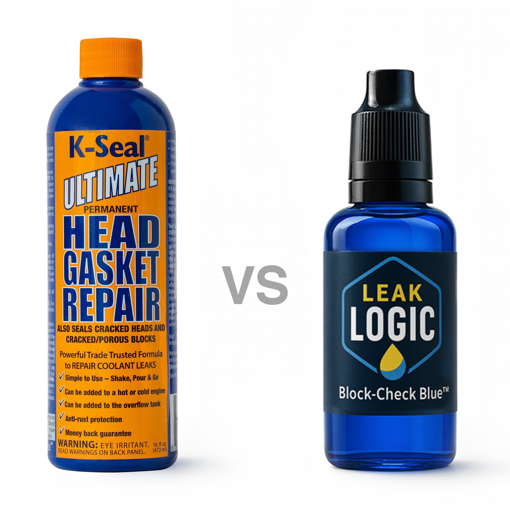

Head Gasket Sealant vs. Tester: Which Do You Need First?
When you suspect a blown head gasket, the thought of a £1000+ repair bill is terrifying. It's no wonder that a £30 bottle of "head gasket sealant" seems like a miracle cure. But before you pour that liquid into your radiator, it's crucial to understand what it does, when it works, and what you absolutely must do first.
This guide will walk you through the pros and cons of sealants versus testers, helping you make a smart decision that could save you time, money, and potentially your engine.
How Do Head Gasket Sealants Work?
Head gasket sealants are chemical formulas designed to patch small leaks. When poured into the cooling system, they circulate with the coolant. The formula typically contains microscopic fibres or chemical agents that react to the extreme heat and pressure differences found at the site of a head gasket leak. This reaction causes the sealant to solidify and form a patch, hopefully sealing the small gap.
The Pros and Cons of Using a Sealant
Pros:
- Low Cost: A bottle of sealant is significantly cheaper than a mechanical repair.
- Easy to Use: The process is as simple as pouring a liquid into your coolant tank.
- A Temporary Lifesaver: For an older, low-value car with a very minor leak, a sealant can sometimes extend its life for a few more months, making it a viable last resort.
Cons:
- It’s Not a Permanent Fix: Even when successful, a sealant patch is a temporary stop-gap, not a long-term repair.
- They Don't Work on Large Leaks: If the head gasket has a significant crack or warp, no amount of sealant will fix it.
- Risk of Clogging: The same chemicals designed to plug leaks can also clog up narrow passages in your radiator, heater core, and thermostat, potentially causing even worse overheating problems.
- It’s a Gamble: The biggest drawback is that you're making a guess. You're spending money on a "fix" without knowing for sure if the head gasket is even the problem.
The Verdict: You MUST Test First. Always.
Here is the single most important piece of advice: **A head gasket sealant is a solution looking for a confirmed problem.** Pouring it into your engine without knowing the true issue is a waste of money and a risk to your cooling system.
This is where a combustion leak tester comes in. It's not a fix; it's a tool for getting a definitive answer.

The process should always be:
- Suspect a Problem: Your car is showing symptoms like overheating or white smoke.
- TEST for Certainty: Use a combustion leak tester like the LeakLogic Block-Check Blue™ kit. In under two minutes, you'll get a clear result.
- Analyse the Result:
- Fluid Stays Blue? Your head gasket is likely fine. You just saved £30 on a useless bottle of sealant and can now focus on finding the real problem (e.g., a faulty thermostat or water pump).
- Fluid Turns Yellow? You have 100% confirmation of a combustion leak. NOW you can make an informed decision about using a sealant as a potential temporary fix for a minor leak, or proceeding with a proper mechanical repair for a major one.
Don't Gamble. Get Certainty.
Before you spend a single penny on a sealant that might not work and could potentially cause more harm, make a smarter investment. A LeakLogic test kit gives you the undeniable proof you need to make the right call for your car and your wallet.
Get the LeakLogic Test Kit →